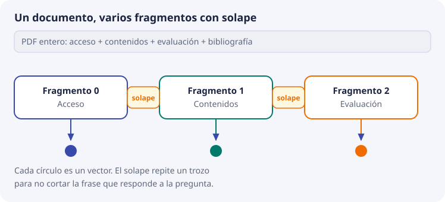
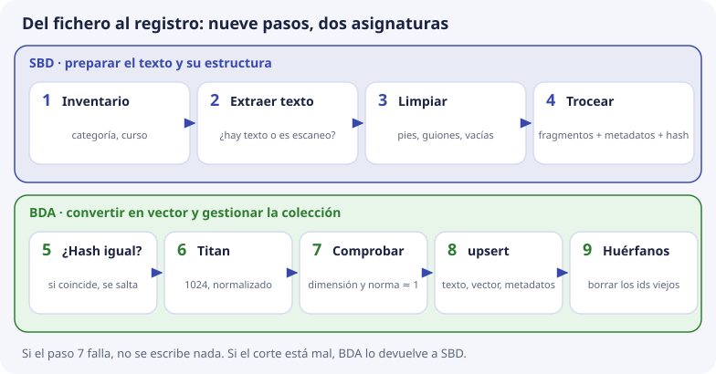

7. Del documento al vector¶
En los temas anteriores hablamos siempre de fragmentos: la base guarda fragmentos (tema 5), cada fragmento lleva sus metadatos (tema 6). Pero el centro no tiene fragmentos: tiene PDF, documentos de texto y páginas web. Este tema responde a la pregunta: ¿cómo se pasa de un fichero a los registros de la colección?
Es un tema muy práctico, y es donde más se juega la calidad de DocIA+. Una idea que conviene tener presente desde el principio:
El vector es fiel al texto que recibe. Si el texto es basura, el vector representa fielmente esa basura.
Si lo que llega al modelo es una portada, un pie de página repetido en las cuarenta hojas o un PDF leído en el orden equivocado, ningún modelo lo arregla.
Por qué no se calcula un vector del documento entero¶
Sería lo más sencillo: un PDF, un vector. Hay tres motivos para no hacerlo.
1. El vector sería una media de temas. Una programación didáctica habla de acceso, contenidos, evaluación y bibliografía. Recuerda el mapa del tema 2: cada tema está en una zona. Un vector del documento entero cae en medio de todas, en un sitio que no se parece mucho a ninguna. La pregunta «¿puedo entrar con un grado medio?» se parece mucho al párrafo de acceso y poco a esa media.
2. Puede no caber. Titan admite del orden de 8.192 tokens por llamada (tema 2). Una programación larga puede pasar de ahí, y lo que sobra se pierde.
3. La cita tiene que señalar un sitio. DocIA+ debe decir de dónde sale la respuesta. «Está en este PDF de treinta páginas» no ayuda. «Está en el apartado Acceso, página 2» sí.
Por eso la unidad que se guarda es el fragmento: un trozo del documento, de unos pocos párrafos, que se convierte en vector por separado. A este proceso de partir el documento se le llama también chunking (de chunk, «trozo»), y por eso el metadato del número de fragmento se llama chunk.

El documento de ejemplo¶
Vamos a trocear un documento pequeño, con los textos que ya conoces de los temas anteriores. Es el documento oferta-iabd-2026, con tres apartados:
Acceso. Para acceder al curso hay que tener un título de técnico superior de una de las
familias indicadas en la orden.
Matrícula. Procedimiento de formalización de matrícula: el alumnado admitido formaliza la
matrícula en la secretaría del centro presentando el DNI y el resguardo de admisión.
Duración. El módulo de Big Data Aplicado tiene una duración de 190 horas.
Son 60 palabras y 368 caracteres. Un documento real tendría cientos o miles de palabras, pero los problemas se ven igual con este.
Primera forma: cortar a ciegas cada cierto número de caracteres¶
La forma más simple es cortar cada 120 caracteres, sin mirar qué hay. Esta es la salida real de hacerlo con Python:
000 |Acceso. Para acceder al curso hay que tener un título de técnico superior de una de las familias indicadas en la orden. |
001 |Matrícula. Procedimiento de formalización de matrícula: el alumnado admitido formaliza la matrícula en la secretaría del|
002 | centro presentando el DNI y el resguardo de admisión. Duración. El módulo de Big Data Aplicado tiene una duración de 19|
003 |0 horas.|
Mira los problemas:
- El número 190 ha quedado partido en «19» y «0 horas». Si alguien pregunta «¿cuántas horas tiene el módulo?», ningún fragmento contiene la respuesta completa.
- El fragmento 003 es inútil: «0 horas.» sola no significa nada. Su vector será pobre y se parecerá a cualquier cosa.
- El fragmento 002 mezcla dos temas: el final de la matrícula y el principio de la duración. Su vector cae entre las dos zonas del mapa.
- La frase de la matrícula está partida entre el 001 y el 002: «en la secretaría del | centro presentando el DNI».
El solapamiento¶
Una solución parcial es el solapamiento (o solape): cada fragmento repite el final del anterior. Así, una frase partida por el corte aparece entera en al menos uno de los dos. Con ventanas de 120 caracteres y 30 de solape:
000 |Acceso. Para acceder al curso hay que tener un título de técnico superior de una de las familias indicadas en la orden. |
001 |milias indicadas en la orden. Matrícula. Procedimiento de formalización de matrícula: el alumnado admitido formaliza la |
002 |lumnado admitido formaliza la matrícula en la secretaría del centro presentando el DNI y el resguardo de admisión. Durac|
003 |l resguardo de admisión. Duración. El módulo de Big Data Aplicado tiene una duración de 190 horas.|
Ahora «190 horas» está entero en el 003, y «presentando el DNI y el resguardo» está entero en el 002. Ha mejorado, pero tiene costes:
- Más fragmentos, y por tanto más llamadas a Titan y más espacio. Aquí seguimos con 4, pero con documentos largos se nota.
- Casi duplicados. Varios fragmentos repiten el mismo trozo y pueden salir juntos en los resultados, ocupando sitios del top-5 con lo mismo.
- Siguen empezando y terminando a mitad de palabra («milias», «Durac»), y siguen mezclando temas.
Un solape del orden del 10 % al 15 % del tamaño del fragmento es un punto de partida habitual. Aquí hemos usado un 25 % para que se vea bien. Si en las pruebas el top-5 trae tres veces el mismo párrafo, el solape es excesivo.
Segunda forma: cortar por la estructura del documento¶
Casi todos los documentos del centro tienen estructura: apartados con título, artículos de una norma, resultados de aprendizaje de una programación. Si se corta por apartados, sale esto:
| id | seccion | texto |
|---|---|---|
oferta-iabd-2026_000 |
Acceso | Para acceder al curso hay que tener un título de técnico superior de una de las familias indicadas en la orden. |
oferta-iabd-2026_001 |
Matrícula | Procedimiento de formalización de matrícula: el alumnado admitido formaliza la matrícula en la secretaría del centro presentando el DNI y el resguardo de admisión. |
oferta-iabd-2026_002 |
Duración | El módulo de Big Data Aplicado tiene una duración de 190 horas. |
Tres fragmentos, cada uno de un solo tema, ninguna frase partida, ningún número roto, y cada uno con su sección para citarlo. Y sin necesidad de solape, porque ningún corte cae a mitad de una idea.
Regla de DocIA+: se corta por estructura siempre que el documento la tenga. La ventana de caracteres con solape es la red de seguridad para cuando no la tiene (un escaneo con el texto seguido, una web mal convertida) o para partir un apartado que sale demasiado largo.
Qué forma de corte usar con cada tipo de fichero lo decide SBD. Si el corte está mal, BDA no lo «arregla» al calcular el vector: se lo devuelve a SBD.
Qué es un fragmento bueno¶
Resumiendo lo visto, un fragmento bueno cumple tres condiciones:
- Cabe en el modelo con margen.
- Habla de un solo asunto.
- Se entiende leído solo, sin el resto del documento.
El tamaño se mide en tokens (tema 2), no en páginas ni en caracteres. Como orientación, en español una palabra ocupa entre 1 y 2 tokens.
| Demasiado corto | Zona de trabajo | Demasiado largo | |
|---|---|---|---|
| Tamaño orientativo | Una línea, un título | Unos pocos cientos de tokens | Se acerca al máximo del modelo o mezcla apartados |
| Ejemplo | «0 horas.» | El apartado de matrícula | La programación entera |
| Efecto | Vector pobre, que se parece a muchas cosas | Se puede citar y tiene un tema | El vector promedia varios temas y la cita es imprecisa |
El número exacto de tokens se decide midiendo con las preguntas de prueba del tema 9, no el primer día. Lo que sí se fija el primer día es un techo muy por debajo de 8.192 tokens, para no depender de si la cuenta de tokens de nuestro programa coincide exactamente con la del modelo.
Qué texto entra al modelo¶
Mira el fragmento oferta-iabd-2026_002: «El módulo de Big Data Aplicado tiene una duración de 190 horas». Se entiende. Pero en muchos documentos el apartado dice solo:
Duración: 190 horas.
Leído solo, ¿de qué es la duración? No se sabe. Su vector estará cerca de cualquier duración de cualquier cosa. Por eso al modelo no se le envía solo el texto del fragmento, sino el mínimo contexto para entenderlo fuera del PDF:
{título del documento}
{sección}
{texto del fragmento}
Con el ejemplo:
Oferta del curso de especialización
Duración
Duración: 190 horas.
Ahora el vector «sabe» que es la duración de ese curso.
Algunas precisiones:
- El título y la sección también van en los metadatos (tema 6). En el texto ayudan al vector; en los metadatos sirven para filtrar y citar.
- No se pega el documento entero como contexto: volveríamos al vector promedio.
- No entran en el texto el número de página, la ruta del fichero ni el código
g4. Eso son metadatos, y como vimos en el tema 6, meterlos en el texto ensucia el vector. - El texto guardado en
documenttiene que ser el que se cita. Si se decide guardar también ahí el título y la sección, es una decisión de diseño que se documenta y se aplica igual en todos los grupos.
El hash: saber si algo ha cambiado¶
Cada fragmento lleva en sus metadatos un hash de su texto (tema 6). Un hash es una huella del texto: una cadena calculada a partir de él. Lo importante es que cualquier cambio en el texto cambia la huella por completo. Salida real con SHA-256 (se muestran los primeros 16 caracteres):
9426f192105791ca El módulo de Big Data Aplicado tiene una duración de 190 horas.
f6f5a2802de5da76 El módulo de Big Data Aplicado tiene una duración de 192 horas.
Un solo dígito distinto y la huella no se parece en nada. Recuerda el tema 2: por eso el hash no sirve para buscar por significado. Pero sirve para otra cosa muy útil: al reindexar, si la huella del fragmento es igual a la que ya está guardada, el texto no ha cambiado y no hace falta volver a llamar a Titan. Se ahorra dinero y tiempo.
El pipeline, paso a paso¶
El pipeline es el programa que hace todo el recorrido, del fichero al registro. Tiene nueve pasos. Los cuatro primeros son de SBD (preparar el texto y su estructura) y los cinco últimos de BDA (convertir en vector y gestionar la colección):

| Paso | Quién | Qué se hace | Qué se evita |
|---|---|---|---|
| 1. Inventario | SBD | Anotar categoría, título, curso y vigencia del fichero | Documentos sin categoría o de otro curso |
| 2. Extracción | SBD | Sacar el texto del PDF o del DOCX | Un PDF escaneado es una imagen sin texto: se detecta aquí, no cuando ChromaDB devuelve fragmentos vacíos |
| 3. Limpieza | SBD | Quitar pies de página repetidos, guiones que parten palabras, páginas vacías y duplicados | Que el pie «IES Ataúlfo Argenta – Página 3» aparezca en todos los fragmentos |
| 4. Troceado | SBD | Partir en fragmentos y calcular sus metadatos, incluido el hash | Frases partidas y fragmentos de dos temas |
| 5. ¿Hash igual? | BDA | Comparar el hash nuevo con el guardado para ese identificador | Llamar a Titan si el texto no ha cambiado |
| 6. Titan | BDA | Pedir el vector: dimensión 1024, normalizado | — |
| 7. Comprobación | BDA | Revisar que el vector tiene 1024 números y longitud cercana a 1 (tema 3) | Escribir un vector mal configurado |
8. upsert |
BDA | Escribir texto, vector y metadatos en la colección | Duplicados al reindexar (tema 5) |
| 9. Borrar huérfanos | BDA | Borrar los identificadores de ese doc_id que ya no se han generado |
Fragmentos viejos que siguen saliendo |
El paso 9 merece un ejemplo. Si la versión anterior de un documento tenía 4 fragmentos (_000 a _003) y la nueva, más corta, solo produce 3 (_000 a _002), el upsert sobrescribe los tres primeros, pero _003 sigue en la colección con el texto viejo. Es un huérfano: nadie lo ha actualizado y se sigue recuperando. El paso 9 lo borra. El tema 8 lo desarrolla, y el laboratorio de ChromaDB local lo practica con el documento calendario-2026.
Los pasos 5 y 9 no son detalles opcionales: son lo que hace que el almacén se pueda mantener durante un curso entero.
La fuente de verdad¶
El PDF o el DOCX oficial no se guarda dentro de ChromaDB. Se guarda en el almacén de documentos (S3 en la fase cloud). ChromaDB guarda los fragmentos ya preparados (tema 5).
Si hay duda entre lo que dice una cita y lo que dice el fichero oficial, manda el fichero, y el fragmento se regenera con el pipeline.
Una consecuencia práctica: nadie corrige una respuesta editando a mano un vector o un registro. Se corrige el documento de origen o el corte, y se deja que el pipeline vuelva a escribir el registro.
Comprueba que lo has entendido¶
1. ¿Por qué no se calcula un solo vector para una programación didáctica entera?
Porque ese vector sería una media de todos sus temas y no se parecería mucho a ninguna pregunta concreta. Además puede superar el máximo de tokens del modelo, y la cita no podría señalar un apartado.
2. En el corte a ciegas de 120 caracteres, ¿qué problema tiene la pregunta «¿cuántas horas tiene el módulo?»?
Que el número 190 quedó partido en «19» y «0 horas». Ningún fragmento contiene la respuesta completa.
3. ¿Qué gana y qué pierde el solapamiento?
Gana que una frase partida aparezca entera en algún fragmento. Pierde en que hay más fragmentos (más llamadas y espacio) y casi duplicados que pueden ocupar el top-5.
4. ¿Por qué el corte por apartados no necesitó solape en el ejemplo?
Porque ningún corte cae a mitad de una idea: cada fragmento empieza y termina con un apartado completo.
5. Un apartado dice solo «Duración: 190 horas». ¿Qué se le añade antes de enviarlo al modelo, y qué no?
Se añaden el título del documento y la sección. No se añaden la página, la ruta del fichero ni la categoría, que son metadatos.
6. Se reindexa un documento y el hash de un fragmento es igual al guardado. ¿Qué hace el pipeline?
No llama a Titan para ese fragmento, porque el texto no ha cambiado y el vector sería el mismo.
7. Un documento pasa de 5 fragmentos a 3. ¿Qué pasa si se olvida el paso 9?
Que _003 y _004 se quedan en la colección con el texto viejo. Son huérfanos y se siguen recuperando en las búsquedas.
8. Un PDF escaneado llega al pipeline. ¿En qué paso debería detectarse el problema?
En el paso 2, la extracción: un escaneo es una imagen y no tiene texto. Si no se detecta ahí, se indexarían fragmentos vacíos.